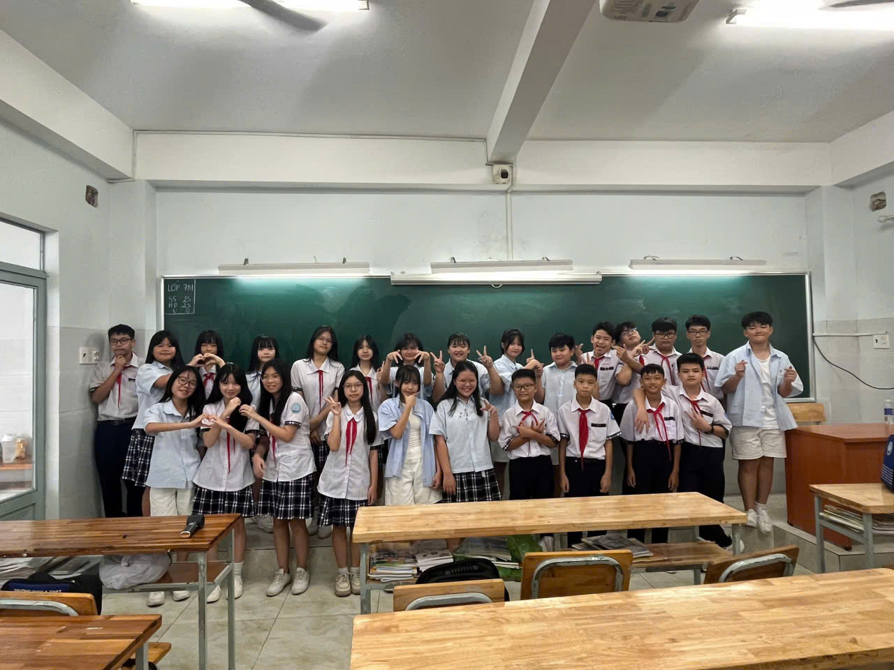

Lời chúc 20/11 của tập thể lớp 7B1 trường THCS-THPT Trần Cao Vân dành cho tất cả các giáo viên Việt Nam.
1.
Nhân ngày 20/11, chúng em xin gửi đến thầy/cô lời chúc sức khỏe, bình an và hạnh phúc. Cảm ơn thầy/cô vì đã luôn tận tụy, dạy dỗ và truyền cảm hứng cho chúng em trên hành trình học tập. Chúng em xin chúc thầy/cô luôn giữ vững nhiệt huyết và niềm đam mê trong sự nghiệp trồng người.
2.
Ngọn lửa tri thức trong chúng em được nhóm lên bởi thầy cô, thầy cô là người gieo ánh sáng hy vọng cho chúng em. Cảm ơn thầy cô vì tất cả những gì cô đã dành cho chúng em. chúng em xin chúc thầy cô có một ngày 20/11 thật ý nghĩa và luôn thành công trong sự nghiệp.
3.
Cảm ơn những tình cảm và kiến thức của thầy cô dành cho chúng em. Nhân ngày, chúng em xin gửi lời chúc chân thành đến thầy cô. Chúc thầy cô luôn mạnh khỏe, công tác tốt và có thêm nhiều thành công cũng như niềm vui trên bước đường giảng dạy.
4.
Nhân ngày Nhà giáo Việt Nam 20/11, chúng em xin gửi đến thầy cô những lời cảm ơn chân thành nhất vì đã dìu dắt chúng em đến gần hơn với chân trời kiến thức. Kính chúc thầy cô luôn luôn mạnh khỏe và hạnh phúc để luôn mang đến cho chúng em ngày càng nhiều bài học hay và bổ ích.

Lớp 7B1 chúng em xin chúc tất cả các thầy cô luôn mạnh khỏe, luôn đạt được nhiều thành công trong sự nghiệp trồng người. Chúng em cảm ơn tất cả các thầy cô đã cho em những kiến thức, bài học cuộc sống bổ ích để giúp chúng em trưởng thành và nên người. Một lần nữa, chúng em xin chúc tất cả các thầy cô mạnh khỏe, vui vẻ và hạnh phúc.